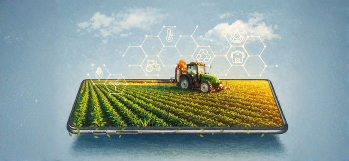
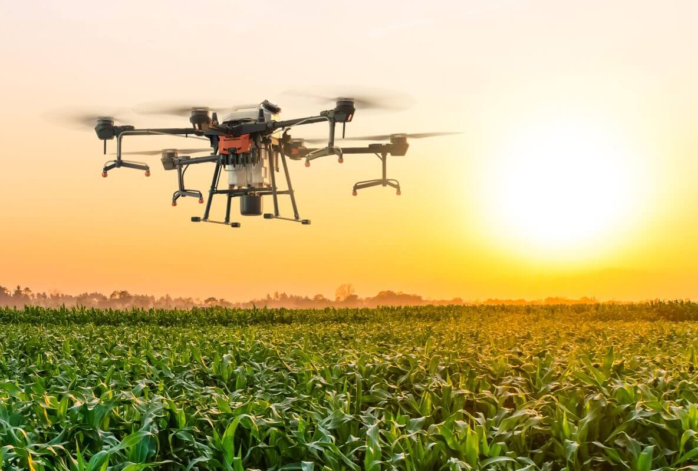

🚁 Drones
Monitoram plantações, identificam pragas e acompanham o crescimento das culturas.
Como a tecnologia está transformando a produção de alimentos de forma sustentável.
A agricultura digital é o uso de tecnologias modernas no campo para melhorar a produção agrícola.
Essas tecnologias ajudam os produtores a acompanhar o solo, o clima, as plantações e os animais com mais precisão.
Além de aumentar a produtividade, a agricultura digital contribui para a sustentabilidade, reduzindo desperdícios e impactos ambientais.

A agricultura digital é o uso de tecnologias modernas no campo para melhorar a produção agrícola.
Essas tecnologias ajudam os produtores a acompanhar o solo, o clima, as plantações e os animais com mais precisão.
Além de aumentar a produtividade, a agricultura digital também contribui para a sustentabilidade, reduzindo desperdícios e diminuindo impactos ambientais.
A agricultura digital utiliza ferramentas tecnológicas para tornar o trabalho no campo mais eficiente.
A sustentabilidade na agricultura significa produzir alimentos sem prejudicar o meio ambiente.
O objetivo é equilibrar produção, preservação ambiental e qualidade de vida.
Monitoram plantações e identificam pragas.
Medem umidade, temperatura e nutrientes do solo.
Utilizam GPS e automação para maior precisão.
Apesar das vantagens, ainda existem dificuldades para a implementação dessas tecnologias.
Redução do desperdício de água.
Menor impacto ambiental na produção agrícola.
Economia de combustível e energia.
Monitoram plantações, identificam pragas e acompanham o crescimento das culturas.
Sensores no solo medem umidade, temperatura e nutrientes.
Tratores e colheitadeiras utilizam GPS e automação para trabalhar com precisão.
A IA ajuda na análise de dados e na tomada de decisões rápidas.
Produção mais eficiente e aumento da qualidade dos alimentos.
Economia de recursos naturais e financeiros.
Produção agrícola mais responsável e sustentável.
Monitoramento completo das lavouras em tempo real.
Muitas tecnologias possuem custos elevados.
Algumas áreas rurais ainda possuem acesso limitado.
Os produtores precisam aprender a utilizar as tecnologias.
A agricultura digital representa um grande avanço para a produção de alimentos.
Com o uso da tecnologia, é possível produzir mais, reduzir desperdícios e preservar o meio ambiente.
Dessa forma, a agricultura digital se torna uma importante aliada da sustentabilidade e da segurança alimentar no futuro.

Embrapa
Ministério da Agricultura
FAO
International Journal of Agrarian Sciences